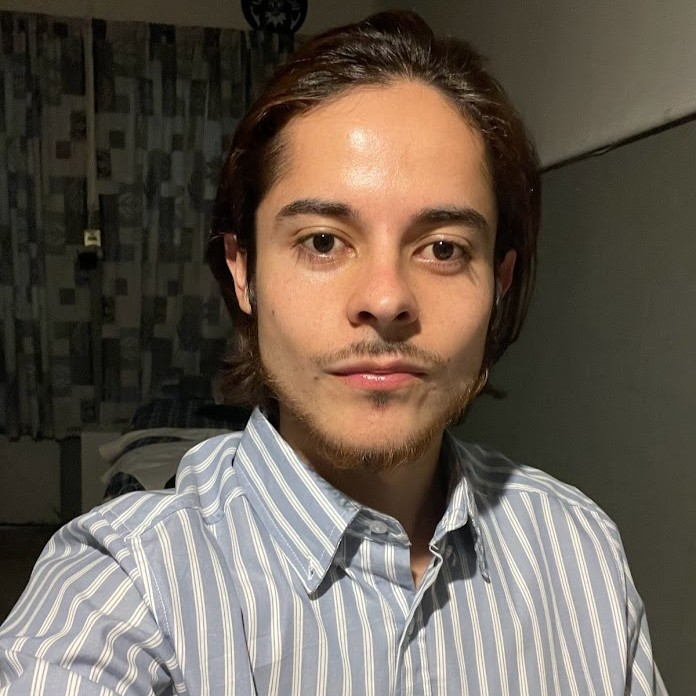
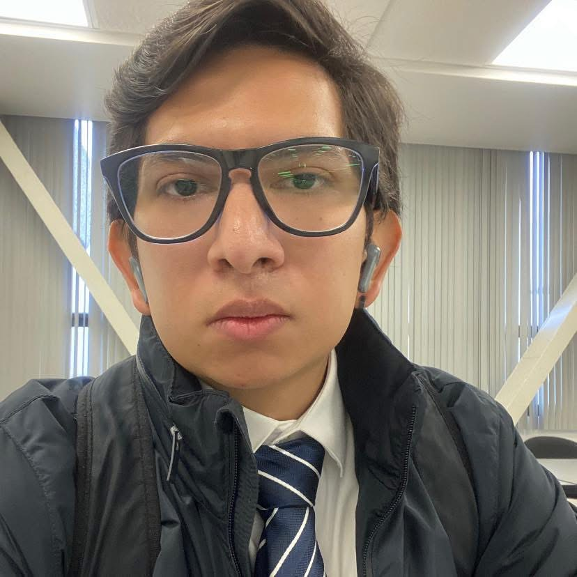
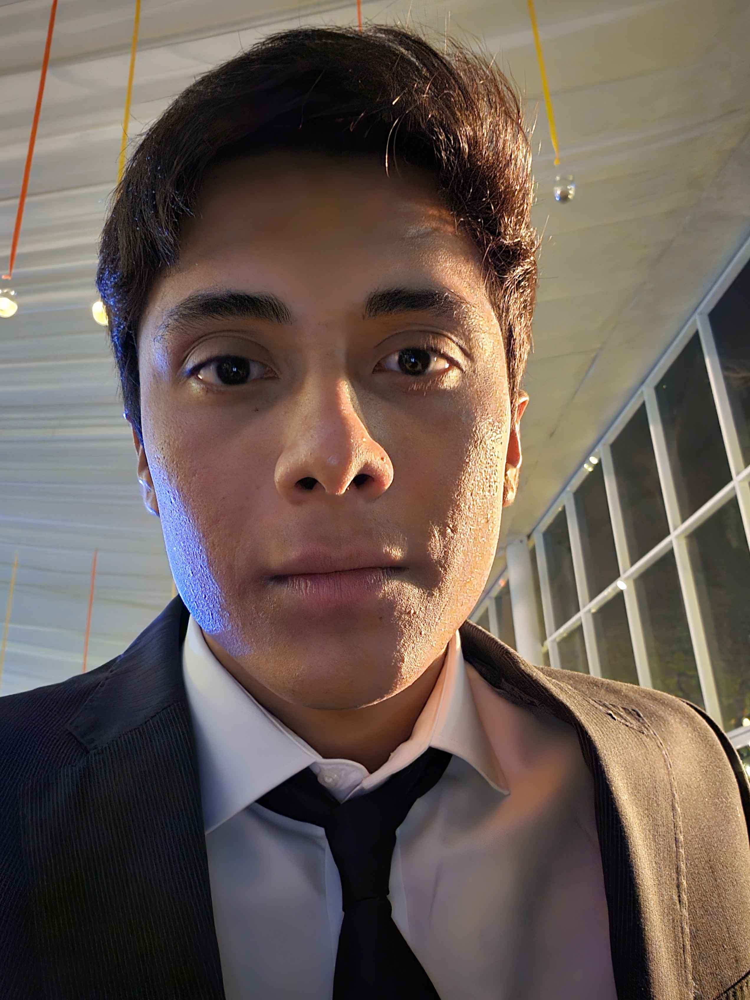
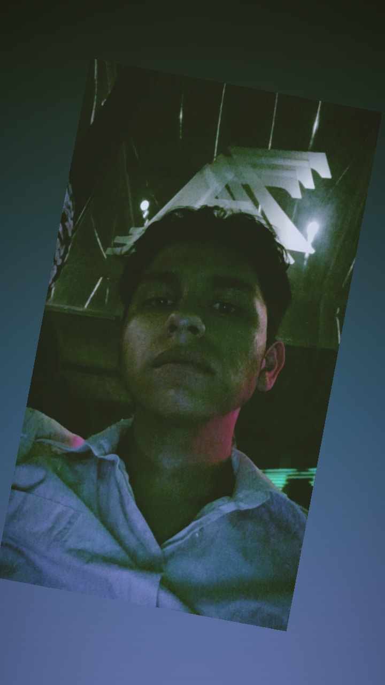
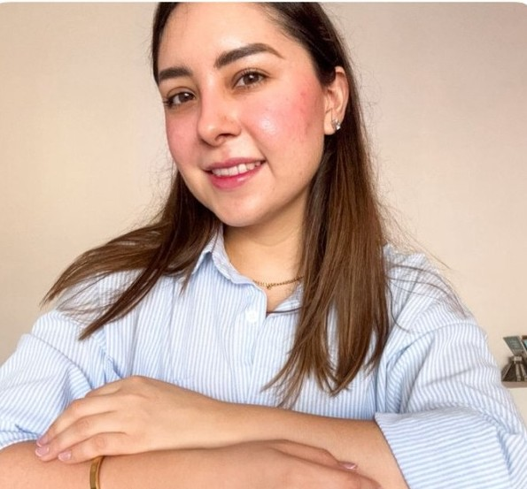

Raúl Adrián Bringas Jiménez [Desarrollar Backend]
Nací en la Ciudad de México y me mudé al norte para mis estudios. Apasionado por las matemáticas, la lógica y la programación, busco iniciar mi carrera en TI con este proyecto para crecer a nivel profesional y personal.

Carlos Sebastián Castilla Mendoza [Scrum Master]
Con 26 años y originario de la Ciudad de México, me apasiona la tecnología, la innovación y la resolución de problemas, siendo hábil en matemáticas. Espero que al finalizar este bootcamp pueda encontrar un trabajo que me permita viajar por el mundo mientras continúo aprendiendo y manteniéndome actualizado en TI.

José Eduardo Frías Domínguez [Desarrollar Backend]
Nací en Guadalajara, Jalisco, y mi pasión por los vehículos, la tecnología y la programación me llevó a estudiar Ingeniería en Sistemas Automotrices. Mi objetivo es integrarme al sector automotriz para aplicar mis conocimientos técnicos, aportar valor y lograr mi crecimiento profesional a largo plazo.

Jessica Bacilia Pérez Romero (Documentador / Analista)
Soy una apasionada del aprendizaje que vive en Puebla, actualmente inmersa en el bootcamp de Generation para ampliar mis conocimientos en tecnología, habiendo consolidado previamente habilidades artísticas como tatuadora. Disfruto mi tiempo libre dibujando, aprendiendo idiomas y realizando actividad física.

Joe Bryan Torres Crucillo [Desarrollador]
Nací y crecí en el Estado de México, Me desarrollé en el área económico-administrativo, apasionado de los deportes, la música y la tecnología.

Karen Janet Ricárdez Santos [Desarrolladora Frontend]
Nací y crecí en Tabasco, y a los 18 años me mudé a la Ciudad de México para estudiar mi licenciatura, donde resido. Mis intereses principales son las Ciencias de la Tierra y la programación, con el deseo de desarrollar soluciones innovadoras y profundizar mis conocimientos en el área de TI.

Ricardo De Jesús Flores Domínguez [Desarrollador Front-End]
Nací en Xalapa, Veracruz en 2007, y actualmente vivo en Querétaro. Sin experiencia previa en el área, mi meta a corto plazo es completar este bootcamp intensivo, donde mi función es Product Owner, y conseguir empleo lo antes posible.

Zoila Yerania González Hernández [ProductOwner]
Soy una persona creativa, lógica y estructurada, nacida en Autlán de Navarro, Jalisco, con profundos intereses en la lectura, el área médica, la tecnología y el emprendimiento. Estudié la Licenciatura en Finanzas en Colima, lo que fortaleció mi disciplina y pensamiento crítico para la toma de decisiones.